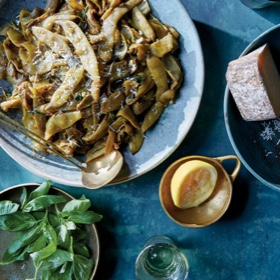

← All recipes
Long-Cooked Vegetables

Servings: Serves 4-6 ·
Ingredients
- 1/3 cup extra-virgin olive oil
- 8 cloves garlic, peeled
- 1/2 teaspoon red-pepper flakes
- 1 large shallot, thinly sliced
- 3 anchovy fillets, optional
- 2 pounds Romano beans, green beans, wax beans or filet beans
- 2 tablespoons water
- 20 large basil leaves, divided
- Kosher or fine sea salt
- 1/2 of 1 lemon
- Ricotta salata, pecorino Romano or Parmesan cheese, for serving, optional
- 2 3/4 pounds broccoli (about 3 large heads or 6 smaller ones).
- 2 pounds summer squash (about 6 medium zucchini), trimmed and cut into 1-inch long pieces on a bias.
- 2 pounds cauliflower or broccoli romanesco (about 1 large head or 2 smaller heads). Trim the florets into 1 1/2-inch pieces, and cut any remaining stem into ½-inch thick slices. Use the leaves too.
- 2 1/4 pounds fennel (about 5 medium bulbs), trimmed and cut into 1/2-inch thick wedges.
- 2 1/2 pounds red or orange bell peppers (about 6 peppers), seeded, stemmed and sliced into ½-inch wide pieces. Or, preferably, 2 1/4 pounds red Italian frying peppers, stemmed, seeded and halved lengthwise.
- 2 pounds celery (about 2 bunches), trimmed and cut into 4-inch long pieces.
Directions
- :
- Set a large Dutch oven or similar pot over low heat. Add oil, garlic, pepper flakes, shallot and anchovies (if using), and stir to combine. Gently cook mixture, stirring occasionally, until the garlic and shallot are just very lightly sizzling, 5 to 7 minutes. Do not brown.
- Add beans and water. Roughly tear 10 of the basil leaves into the pot. Add 1 teaspoon kosher salt or ½ teaspoon fine sea salt, and stir to combine. Cover the pot, and reduce heat to as low as possible.
- Cook beans until the steam has caused them to wilt, about 45 minutes. Stir, and continue to cook 1 hour and 15 minutes more, stirring every 20 minutes or so. Treat the shallot as a bellwether — if you hear it starting to sizzle or see it beginning to brown, scrape the bottom of the pan and add a teaspoon of water to deglaze, if necessary. The garlic cloves will completely break down and coat the beans as they cook.
- After 2 hours, remove the lid, and increase the heat to medium-high. Let any remaining water evaporate, and lightly brown the beans, stirring regularly, about 10 minutes. Roughly tear in the remaining basil. Taste, and adjust salt, as needed.
- Transfer the beans to a serving dish, and finish with a squeeze of lemon and a grating of ricotta salata, pecorino Romano or Parmesan, if desired. Serve warm or at room temperature.
- Vegetable variations:
- (Just to be clear, the weights given here are guides for shopping, before trimming and prepping. The aim is to end up with about 2 pounds of trimmed, prepped vegetables.) When preparing broccoli, squash, cauliflower or fennel, take care when stirring toward the end of the cooking to prevent the vegetables from falling apart.
Original source: cooking.nytimes.com